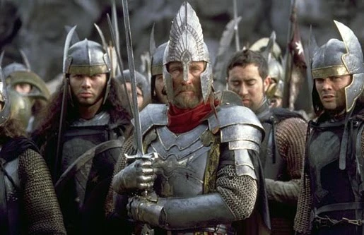
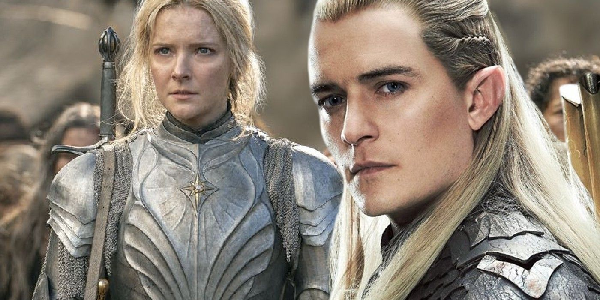
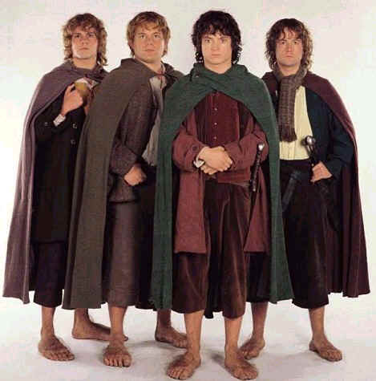
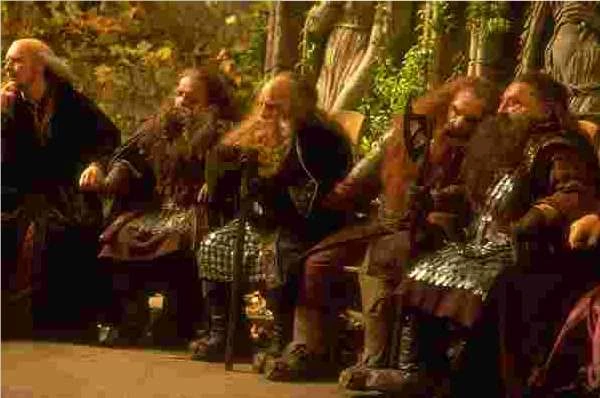
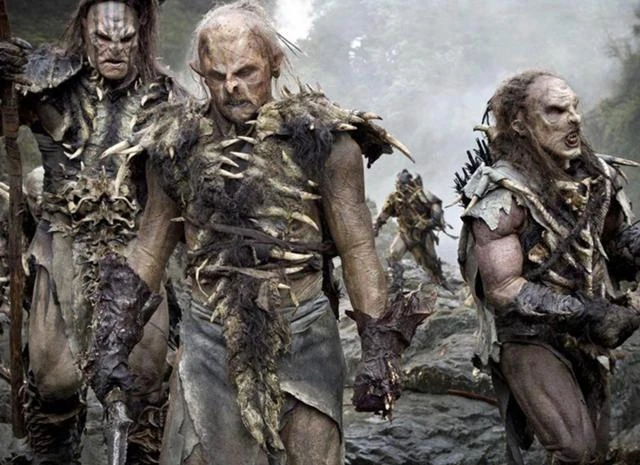

Humanos

Habitan reinos como Gondor y Rohan. Son el pueblo más numeroso y diverso de la Tierra Media.
- Vida relativamente corta comparada con otras razas
- Gran capacidad de adaptación y ambición
- Origen: Gondor y Rohan
Elfos

Un pueblo inmortal, sabio y conectado con la naturaleza y la magia antigua.
- Inmortales, salvo por herida grave o pena profunda
- Sentidos y percepción superiores
- Origen: Rivendel y el Bosque Negro
Hobbits

Pequeños, hogareños y resistentes, viven una vida tranquila lejos de los grandes conflictos.
- Estatura baja y pies grandes y peludos
- Gran resistencia a la corrupción del Anillo
- Origen: La Comarca
Enanos

Un pueblo fuerte y orgulloso, maestros de la forja y la minería en las montañas.
- Gran resistencia física y fortaleza
- Expertos artesanos y mineros
- Origen: Erebor y Moria
Orcos

Criaturas corrompidas y creadas para servir al mal, numerosas y temidas en la guerra.
- Fuerza bruta y resistencia al combate
- Se multiplican con rapidez
- Origen: Mordor e Isengard